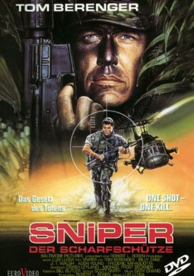

#2344 Sniper - Der Scharfschütze
Alternativ: Sniper
 
 IMDB-Wertung: 6.1 / 10
IMDB-Wertung: 6.1 / 10  Metascore: 0
Metascore: 0 
Sergeant Tom Beckett ist ein eiskalter Elitekiller, der beste Scharfschütze seiner Einheit. Sein Auftraggeber ist die amerikanische Regierung. Seine Feinde sind Drogendealer, Rebellen und abtrünnige CIA-Söldner. Gerade von einem tödlichen Einsatz zurück, erhält er einen neuen Auftrag im mörderischen Dschungel Panamas. Er soll den kaltblütigen Drogenboss Alvarez und seine Bande liquidieren. Beckett weiß, dass das ein Ding der Unmöglichkeit ist, denn Alvarez verschanzt sich, umgeben von einer Privatarmee. An seiner Seite ist Richard Miller, ein Grünschnabel ohne Kampferfahrung. Ihr Verhältnis ist von Anfang an gespannt. Als Miller versagt und sie beide in Lebensgefahr bringt, kennt der Sniper keine Gnade mehr...
Jahr: 1993
Dauer: 98 Minuten
FSK: 18
Land: USA Studio: TriStar PicturesTonspuren:
Untertitel:
Auflösung: 720p (1280x720) Größe: 2723 MB
Genre: Action, Thriller, Drama
Regisseur: Luis Llosa
Drehbuch: Michael Frost Beckner, Crash Leyland
Soundtrack: Gary Chang
Darsteller:
 Tom Berenger als Thomas Beckett
Tom Berenger als Thomas Beckett Billy Zane als Richard Miller
Billy Zane als Richard Miller J.T. Walsh als Chester Van Damme
J.T. Walsh als Chester Van Damme Aden Young als Doug Papich
Aden Young als Doug Papich- Gary Swanson als NSC Officer in Washington
- Teo Gebert als Ripolys Friend
 Rex Linn als Colonel , uncredited
Rex Linn als Colonel , uncredited- Antony Szeto als Boat Rebel , uncredited
- Ken Radley als El Cirujano
- Reynaldo Arenas als Cacique
 Hank Garrett als Admiral in Washington
Hank Garrett als Admiral in Washington- Frederick Miragliotta als General Miguel Alavarez
- Vanessa Steele als Mrs. Alvarez
- Carlos Álvarez als Raul Ochoa
- Tyler Coppin als Ripoly
- Edward Wiley als DeSilva
- William Curtin als Mountain Top Pilot
- Howard Bosse als Mountain Top Co-Pilot
- Christos A. Linou als Mountain Top Sniper
- Christopher Morsley als Soldier at Pool Table
- Don Battee als Soldier at Bar
- Raj Sidhu als Soldier in Barn
- Roy Edmonds als Cabrera
- Johnny Raaen als Crew Chief
- Loury Cortez als Father Ruiz
- Jorge Bustamante als Rebel Captain at Extraction
Datei: X:\FSK18-1900-1999\Sniper - Der Scharfschütze (1993, FSK18, 1280x720).mkv seit 31.10.2015
Festplatte: FSK18
 Es gibt insgesamt 108 Filme in der Gruppe 'FSK18-1900-1999'
Es gibt insgesamt 108 Filme in der Gruppe 'FSK18-1900-1999'